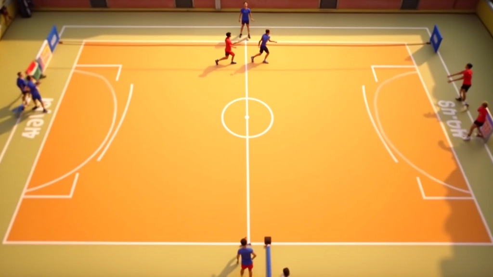

نظام الدوران الأساسي في الكرة الطائرة
شرح مفصل لكيفية تحرك اللاعبين حول الملعب بعد كل نقطة. تعلم المواقع الست والترتيب الصحيح.
اقرأ المزيدالتعرف على الأخطاء التي يرتكبها اللاعبون في نظام الدوران وكيفية تصحيحها بسرعة. نظام الدوران هو أساس اللعبة — عندما يخطئ، كل شيء ينهار.

اللاعبون يدورون بعد كل نقطة — هذا جزء من قواعد اللعبة. لكن الدوران ليس مجرد حركة ميكانيكية. إنه يؤثر على التوازن الدفاعي، مواقع اللاعبين القويين، وحتى الناحية النفسية للفريق.
الأخطاء تحدث بسهولة — لاعب واحد ينسى مكانه، والفريق بأكمله في الجانب الخطأ. النتيجة: ضعف دفاعي وتصريف سيء للكرات. في هذا الدليل، نستعرض الأخطاء الأكثر شيوعاً وكيف تصححها قبل أن تؤثر على النتيجة.
معظم الأخطاء لا تحتاج وقتاً طويلاً للإصلاح. تصحيح بسيط في التوضيح أو بعض التدريبات المركزة يحسن الأداء بشكل ملحوظ في غضون أسابيع.
اللاعبون لا يتذكرون الترتيب الصحيح. واحد يعتقد أنه يجب أن يذهب إلى المنتصف، والآخر يتوجه للجانب. النتيجة فوضى في أول 5 ثوان بعد النقطة.
الحل؟ لا تترك الترتيب لاجتهاد اللاعبين. وضح الأرقام بوضوح. كل لاعب يعرف موقعه الدقيق — الموقع 1، 2، 3، إلخ. استخدم ملصقات أو علامات أرضية في التدريب لتجعل الأمر بصرياً وسهلاً.
هذا الدليل يقدم معلومات تعليمية حول قواعد الدوران في الكرة الطائرة. القواعس الرسمية قد تختلف حسب المنظمة أو المستوى التنافسي. نوصيك بمراجعة قواعس الاتحاد المحلي أو الدولي للحصول على التفاصيل الأخيرة والمتقدمة.
حتى لو كان الترتيب صحيحاً، اللاعبون يتحركون ببطء. يتوقفون للحظة بعد نقطة، يتحدثون، يلتقطون أنفاسهم. وفي تلك اللحظات الثوانية الضائعة، الكرة الجديدة تبدأ بالفعل.
التحكم بالوقت حاسم. الدوران يجب أن يكون سلساً وسريعاً — بضع ثوان فقط. لاعب يتحرك بينما الآخرون يتحركون في نفس اللحظة، وكل شيء متزامن.
نصائح للتحسين:
في التدريب، استخدم إشارات صوتية. صفر واحد = الكرة انتهت. صفر ثانٍ = ابدأ الدوران. يتعلم اللاعبون أن يتفاعلوا بسرعة. بعد عدة تدريبات، ستصبح ردود الفعل تلقائية.
حتى عندما يكون الترتيب صحيحاً والحركة سريعة، قد تظهر فجوات. اللاعب في الموقع 4 قريب جداً من الشبكة. الموقع 5 بعيد جداً. الموقع 1 منحرف نحو اليمين.
هذه الفجوات تترك مناطق ضعيفة في الدفاع. الكرات المنخفضة والسريعة تمر بسهولة. التصريف يصبح صعباً.
الحل هو التدريب على التوازن. كل موقع له مسافة محددة من الشبكة والخطوط الجانبية. علم اللاعبين الأرقام الفعلية — الموقع 3 يجب أن يكون على بعد 3 أمتار من الشبكة، الموقع 1 يجب أن يكون قريباً من خط الأساس.

شرح مفصل لكيفية تحرك اللاعبين حول الملعب بعد كل نقطة. تعلم المواقع الست والترتيب الصحيح.
اقرأ المزيد
دليل شامل حول عملية التبديل، عدد التبديلات المسموحة، والإجراءات القانونية.
اقرأ المزيد
تعمق في الاستراتيجيات المتقدمة التي تستخدمها الفرق المحترفة لتحسين الدوران والاستبدالات.
اقرأ المزيد
كاتب المقالة
فريق التحرير والمراجعة
كتبه فريق الدوران الذهبي التحريري، مركزين على تقديم شروحات عملية وسهلة المتابعة لقواعد الكرة الطائرة.
أخطاء الدوران ليست حتمية. مع الممارسة المنتظمة والتركيز على التفاصيل، يمكن لأي فريق إتقان النظام. الدوران الصحيح يبني الثقة، يحسن الدفاع، ويغير نتائج المباريات.
ابدأ اليوم. مارس الدوران في كل تدريب. صحح الأخطاء فوراً. بعد أسابيع قليلة، ستلاحظ الفرق — فريق منظم، دفاع قوي، وأداء متسق.
استكشف المزيد من أدلة الدوران والتبديل